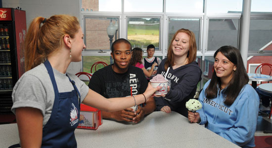
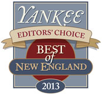

The UConn Dairy Bar, or Dairy Product Salesroom as it was originally named, opened sometime between 1953 and 1954 to sell dairy products that were manufactured by the Creamery. It was attractively decorated in the colors and style of the time; black felt-covered menu boards mounted on tan tile walls, stainless steel dipping cabinets, and a curved yellow formica countertop complete with dark green bar stools.
Prior to the establishment of this retail operation, the Creamery had been used exclusively for teaching and research. A 1917 UConn Course Catalog refers to the Creamery and describes courses taught in Dairy Husbandry such as Milk Testing and Separation, Milk Production, Ice Cream Making, and Butter and Cheese Making. It moved to its new, larger quarters in the George White building in November 1998.
The Dairy Bar is currently undergoing a rennovation which features UConn Blue and Gray along with many pictures of UConn Student Activities. There is an observation window looking into the creamery where the ice cream is made. The Animal Science building is named after George Cleveland White who served as a Professor of Dairy Husbandry at UConn from 1914 to 1944. He taught Milk Production, Cattle Judging, Animal Nutrition, and Herd Improvement classes.
The Creamery was established in the early 1900s and ceased the majority of its operations in 1991. At its peak, the Creamery employed more than 25 full-time employees, grossed over one million dollars per year, and supplied the UConn dormitories and other state agencies with daily deliveries of fluid milk, sour cream, cream cheese and ice cream. Today, the Dairy Bar manufactures ice cream according to its original and highly popular recipe; this delicious product is sold at the UConn Dairy Bar. Also available is cultured yogurt and a variety of cheeses.
Over 200,000 customers visit the Dairy Bar annually to enjoy more than 24 flavors. Perhaps our most famous of these is Jonathan Supreme ice cream, named for the school's mascot, Jonathan the Husky Dog (vanilla ice cream swirled with peanut butter and chocolate covered peanuts). Other popular flavors are Strawberry Cheesecake, Coffee Espresso Crunch, Oreo, and Chocolate Chip Cookie Dough. The Dairy Bar is open year round and continues to enjoy long lines of devoted customers who wait to sample their favorite flavor.
Treat yourself to a famous UConn tradition by trying some of our locally made ice cream! Over 200,000 customers visit the Dairy Bar annually to enjoy more than 24 flavors of ice cream created right here at the Dairy Bar. The Dairy Bar still manufactures ice cream according to its original and recipe from the early 1900s. Perhaps our most famous flavor is "Jonathan Supreme", named for the school's mascot, Jonathan the Husky Dog (vanilla ice cream swirled with peanut butter and chocolate covered peanuts).
During your visit to the UConn Dairy Bar you may even have the chance to observe ice cream being made! Call for our ice cream production schedule at 860-486-2634 or 860-486-1021. 
UConn Dairy Bar ice cream makes the "Best of Connecticut: 2012" list! Read the article here!
UConn Dairy Bar Named a 2013 "Best of New England - Editor's Choice" Winner by Yankee Magazine 
The University of Connecticut gets back its ag-school roots at the UConn Dairy Bar in Storrs, where you can order your cone, sundae or shake and then walk out back to Horsebarn Hill to toast the cows that made it all possible. 51 Great Ice Cream ParlorsUSA Today